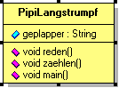
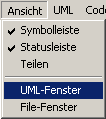
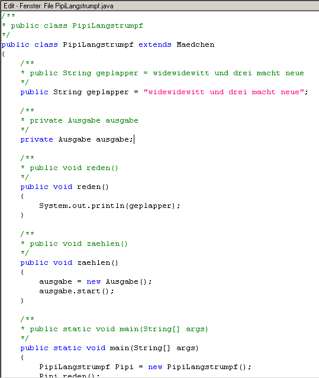

Klassen markieren |
|
|  |
Nachdem wir sämtliche Klassen, die wir benötigen, im
UML-Fenster erstellt haben, gehen wir zum nächsten Schritt
über.
Wir wollen Java-Sourcecode erstellen. Dieses Erstellen nennt man "Generieren". Dazu markiert man die entsprechende Klasse. In unserem Beispiel klickt man einmal auf die Klasse "PipiLangstrumpf". Es erscheint ein Rand mit 8 kleinen, schwarzen Vierecken um diese Klasse. |
Klassen generieren |
|
|  |
Nun klicken wir auf den Generieren-Button rechts
oben in der Toolbar.
Im Edit-Fenster sollte nun ein Text
erscheinen, der Java-Sourcecode enthält. Außerdem müssten im Message-Fenster die Meldungen stehen, die Jumli zu dieser Generierung ausgibt. Grundsätzlich wird alles protokolliert, was in den Edit-View geschrieben wird. Nachdem im Edit-Fenster jetzt der Java-Code erscheint, klicken Sie bitte in der Menü-Leiste auf "Ansicht" und dann auf "UML-Fenster". Dadurch kommen Sie wieder ins UML-Fenster zurück. Dort wiederholen Sie die letzten beiden Schritte mit den Klassen "Ausgabe" und "Mädchen". Ist das geschafft, stehen im Tree-View im Register "generierte Files" ihre drei Java-Dateien. |
Objekte erzeugen |
|
|  |
Im Edit-View können wir jetzt den Code so anpassen,
dass er auch das macht, was wir möchten.
Zuerst brauchen wir dazu ein Objekt der
Klasse "PipiLangstrumpf". Klicken Sie
im Tree-View auf das File "PipiLangstrumpf.java".
Anschließend klicken Sie in den Edit-View und schreiben in
der Methode "main"
(steht ganz unten im Edit-Fenster), zwischen die beiden
geschweifen Klammern folgende Zeilen: PipiLangstrumpf Pipi = new PipiLangstrumpf(); Pipi.reden(); Pipi.zaehlen(); |
|
Damit sagen wir dem System, dass wir eine neue "Pipi" erzeugen wollen, welche vom Typ "PipiLangstrumpf" sein soll. Zudem rufen wir die Methoden "reden" und "zaehlen" auf. Wir möchten, dass sich unsere "Pipi" mit uns unterhält. Sie weiß jedoch noch nicht, was sie sagen soll. Um das zu ändern schreiben Sie in der Methode "zaehlen" zwischen die beiden geschweiften Klammern, folgendes: System.out.println(geplapper); Wir sagen "Pipi" also, sie soll beim Reden auf unser Attribut "geplapper" zurückgreifen. In die Methode "reden" schreiben wir: ausgeb = new Ausgabe(); ausgeb.start(); Das bedeutet soviel wie: Greife über die Aggregation auf die Klasse "Ausgabe" zu und starte die Ausgabe. Haben Sie alles ausgeführt, sollte Ihr Code so aussehen wie links oben neben dem Text. Durch einen Klick auf das Bild können Sie dieses vergrößern und sich den Quelltext genau anschauen. |
|
Die Ausgabe-Klasse |
|
|
Der nächste Schritt ist der letzte in diesem Kapitel. Wir müssen in
dem File "ausgabe.java" noch die Methode "start" ergänzen.
Das machen wir, indem wir im Tree-View auf das
File "ausgabe.java" klicken und dann im Edit-View in die
Methode "start" folgendes einfügen: System.println("\nZwei mal drei macht sechs ..."); |
|
{kind=link}